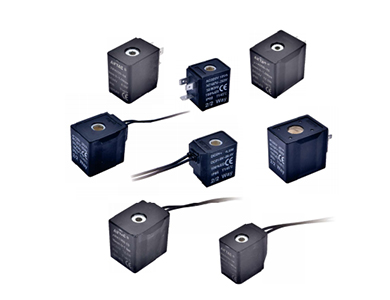
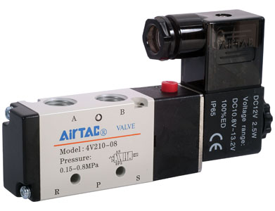
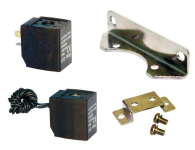
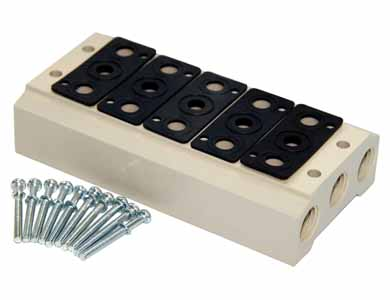
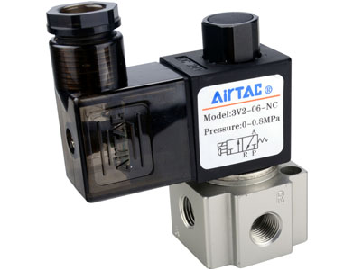
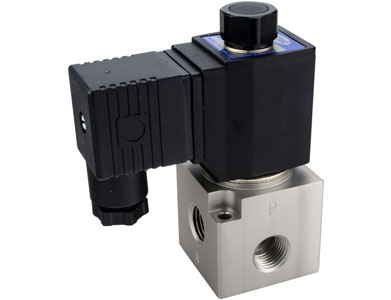
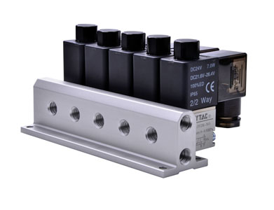
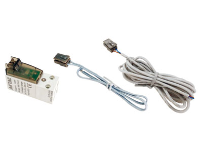

110,160 Series coil
110,160 Series coil: thông tin kỹ thuật, datasheet và cấu hình cần kiểm tra trước khi chọn van/coil/manifold.
4V200 Series van điện từ (5/2 way, 5/3 way): thông tin kỹ thuật, datasheet và cấu hình cần kiểm tra trước khi chọn van/coil/manifold.

Phần này tóm tắt đặc điểm kỹ thuật và checklist chọn mã theo nhóm sản phẩm.
4V200 Series van điện từ (5/2 way, 5/3 way) là nhóm van điện từ AirTAC cần được chọn theo số cổng/vị trí, kiểu pilot, điện áp coil, cỡ cổng và lưu lượng. Khi dùng để thay thế, nên đối chiếu kỹ mã đầy đủ trên thân van và datasheet.
Với 4V200 Series, không chỉ gửi tên series; cần gửi mã đầy đủ trên tem van, điện áp coil, cỡ cổng và kiểu ren. Nếu chưa rõ, gửi ảnh tem và ảnh cổng ren để Fast Group đối chiếu.
Khi thay van cũ, kiểm tra layout cổng P/A/B/R/S, điện áp coil, kích thước thân van và phụ kiện manifold để tránh lệch cấu hình.
Đã có datasheet để đối chiếu, cần kiểm tra bảng mã trước khi chốt.
Chuẩn bị đủ các thông tin này giúp Fast Group kiểm tra cấu hình và báo giá nhanh hơn.
Có datasheet PDF để đối chiếu bảng mã, kích thước và phụ kiện trước khi chốt RFQ.
Fast Group Engineering cung cấp AirTAC chính hãng, hỗ trợ kiểm tra mã hàng, tư vấn cấu hình và chuẩn bị chứng từ theo yêu cầu từng đơn hàng.
Xem tài liệu hãngMở thêm các trang liên quan để so cấu hình, datasheet và lựa chọn thay thế.

110,160 Series coil: thông tin kỹ thuật, datasheet và cấu hình cần kiểm tra trước khi chọn van/coil/manifold.

116,170 Series coil: thông tin kỹ thuật, datasheet và cấu hình cần kiểm tra trước khi chọn van/coil/manifold.

3V-van manifold: thông tin kỹ thuật, datasheet và cấu hình cần kiểm tra trước khi chọn van/coil/manifold.

4V/5V-van manifold: thông tin kỹ thuật, datasheet và cấu hình cần kiểm tra trước khi chọn van/coil/manifold.

3V2 Series van

3V3 Series van

3V2M Series Solenoid van

CPV15 Series micro-solenoid valve
Fast Group Engineering hỗ trợ cung cấp AirTAC chính hãng, báo giá theo RFQ và chứng từ theo yêu cầu từng đơn hàng.